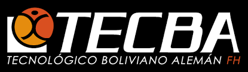

Bienvenidos al Instituto TECBA
El TECNOLÓGICO BOLIVIANO ALEMAN es una institución de Educación Superior Tecnológica Especializada, que viene aportando a una Bolivia productiva formando profesionales con una clara orientación tecnológica que responda a la realidad productiva del país basados en el Sistema de Aprendizaje, Educación y Trabajo Alemán “SAETA” para formar profesionales Especialistas, Emprendedores e Innovadores.